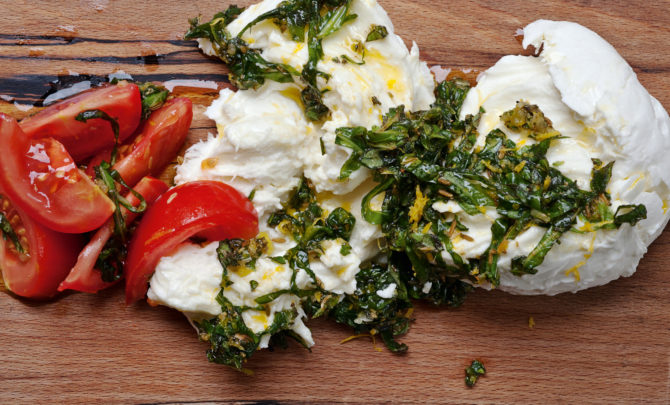

Ottolenghi's Marinated Buffalo Mozzarella and Heirloom Tomatoes

Description
This dish is perfection, and is best made at the peak of summer when you can get tomatoes directly from the farm.
There's really nothing more to say.
Ingredients
- 1/2 teaspoon fennel seeds
- Grated zest of 1 lemon
- 15 basil leaves, shredded
- 2 teaspoons oregano, chopped
- 2 teaspoons best quality extra virgin olive oil, plus extra to finish
- 2 teaspoons grapeseed oil
- 1 garlic clove, crushed
- 1/2 teaspoon Maldon sea salt
- 8 to 9 ounces buffalo mozzarella
- 2 medium ripe tomatoes (red, yellow or mixed)
Steps
- Scatter the fennel seeds in a small frying pan over medium heat and dry-roast until they
begin to pop. Transfer to a mortar and pestle and crush roughly. Place the crushed seeds
in a small bowl and add the remaining marinade ingredients.
- Break the mozzarella roughly with your hands. Smear it with the marinade and set aside
for 15 to 30 minutes.
- To serve, cut the tomatoes into wedges and plate along with the marinated mozzarella. Drizzle
with extra olive oil and serve.